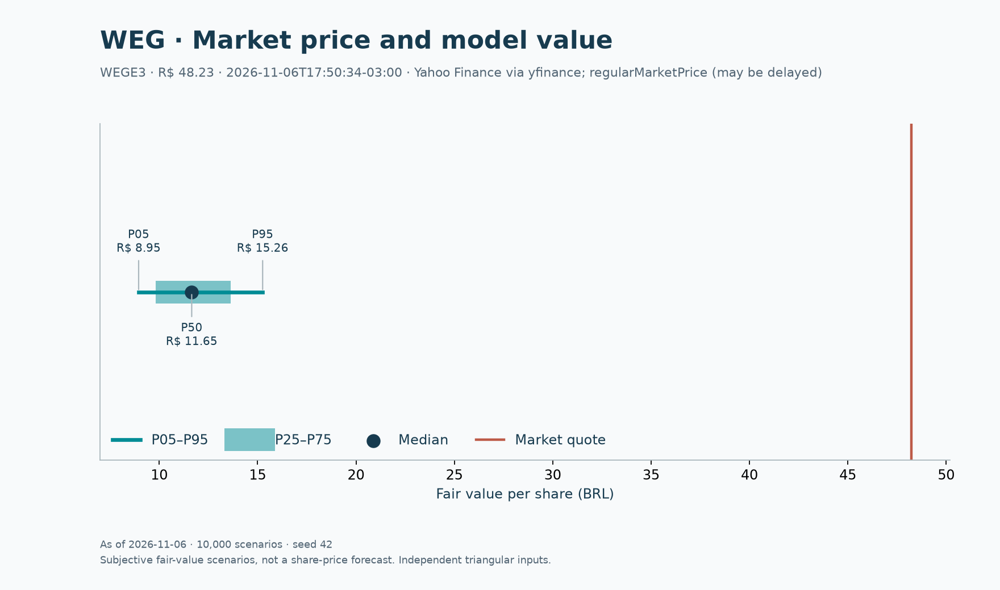

WEG: a tese de qualidade precisa explicar o preço
WEGE3 · B3 · avaliação em 06/11/2026 · Victor Pimenta
Minha conclusão neste estudo é cautela com o preço: a operação pode ter vantagens industriais, mas as hipóteses explicitadas aqui não sustentam a cotação observada. O DCF base retorna R$11,67/ação, frente a R$48,23 no snapshot de mercado. Isso é um resultado condicional do modelo, não um preço-alvo de consenso nem uma recomendação personalizada de investimento.
A empresa e a hipótese de investimento
Escolhi a WEG porque motores, automação e equipamentos para geração, transmissão e distribuição permitem conectar demanda, investimento em capacidade e capital de giro ao caixa. Produtos de reposição e projetos de maior duração oferecem ciclos diferentes. A presença internacional pode diversificar receita e também introduz câmbio e execução industrial. A descrição dos negócios está no relatório da administração da DFP 2024, pp. 3–4.
Minha hipótese é que eficiência energética e expansão de redes podem sustentar pedidos, mas o retorno ao acionista depende do preço pago, da conversão de lucro em caixa e do reinvestimento necessário. A diversificação, sozinha, não recebe um prêmio automático no valuation.
O que os dados mostram
| R$ milhões, exceto margem | FY2024 | FY2025 | TTM set/2026 |
|---|---|---|---|
| Receita | 37.986,941 | 40.804,110 | 40.719,467 |
| EBIT | 7.690,528 | 7.998,741 | 7.884,487 |
| EBITDA = EBIT + D&A | 8.503,013 | 9.000,037 | 8.952,604 |
| Margem EBIT | 20,25% | 19,60% | 19,36% |
Fontes primárias: DFP 2025 CVM e ITR 2026 CVM, CNPJ 84.429.695/0001-11, versão 1. TTM = FY2025 + 9M2026 − 9M2025. Reconciliação, contas e unidades. O TTM sobrepõe parte de FY2025; essa comparação não mede crescimento ano contra ano.
Quanto as premissas sustentam
| Métrica | Resultado ou premissa |
|---|---|
| Crescimento Y1–Y5 | 12%, 11%, 10%, 9%, 8% |
| Margem EBIT / imposto | 20% / 34% |
| Capex / D&A / NWC, sobre receita | 4,5% / 2,5% / 20% |
| WACC / g nominal BRL | 14,652% / 4,0% |
| Enterprise value | R$48.585,26 milhões |
| Equity value | R$48.967,86 milhões |
| Fair value base | R$11,67/ação |
| Cotação observada | R$48,23/ação |
| Spread base / cotação − 1 | −75,8% |
| Monte Carlo P5 / mediana / P95 | R$8,95 / R$11,65 / R$15,26 |
Cotação: Yahoo Finance, WEGE3.SA,
regularMarketPrice capturado via yfinance. Horário de mercado 06/11/2026
17:50:34 −03:00; coleta 18:05:36 −03:00. Pode haver atraso; não é rotulada
como fechamento oficial. A avaliação usa os saldos patrimoniais de setembro sem
roll-forward do mês intermediário. O snapshot permanece reproduzível offline.
Os 10.000 cenários com seed 42 variam crescimento, margem, WACC e g em distribuições triangulares explicitadas na metodologia. Nenhum desses sorteios supera a cotação. Isso não significa chance zero de alta: os suportes foram escolhidos pelo autor e excluem hipóteses mais otimistas e outros riscos. A distância para o preço pede revisão das premissas e da estrutura do modelo, não apenas mais simulações. Aproximadamente 64,6% do EV base vem do terminal.

O que mudaria minha avaliação
A tese favorável exigiria crescimento persistente maior, margem superior, custo de capital menor ou combinação desses fatores. Eu procuraria evidência de pedidos convertidos em entregas, capacidade produtiva financiada e retorno incremental que sustente a perpetuidade. Crescer receita sem financiar estoques, recebíveis e fábricas não é uma hipótese econômica suficiente.
Catalisadores a acompanhar são divulgação de pedidos e resultados, entrada de capacidade em operação e execução de projetos de rede. Eles podem alterar a percepção sobre crescimento e margem; este estudo não atribui data ou probabilidade a esses eventos. Uma redução de WACC sem melhora operacional também elevaria o DCF.
A tese adversa combina adiamento de encomendas, compressão de margem e capex antes da receita. Isso pode afetar vários drivers simultaneamente, enquanto o Monte Carlo padrão assume independência entre seus quatro sorteios. O deep dive brasileiro relaciona esses mecanismos ao ciclo setorial.
Limites que pesam na conclusão
O modelo consolida negócios e países, não estima correlações empíricas e usa alíquota uniforme de 34%. Capex, D&A e NWC fixos podem subestimar reinvestimento. O terminal não tem ROIC próprio. O saldo contábil de não controladores aproxima seu valor justo; arrendamentos são deduzidos como financiamento. Ações excluem tesouraria, sem previsão de diluição ou recompras. Mudanças nessas escolhas podem alterar materialmente o valor.
Este pitch é auditável e reproduzível; não pretende encerrar a discussão sobre o valor da WEG. O notebook permite alterar as hipóteses, e o Excel mostra a conta por etapa.